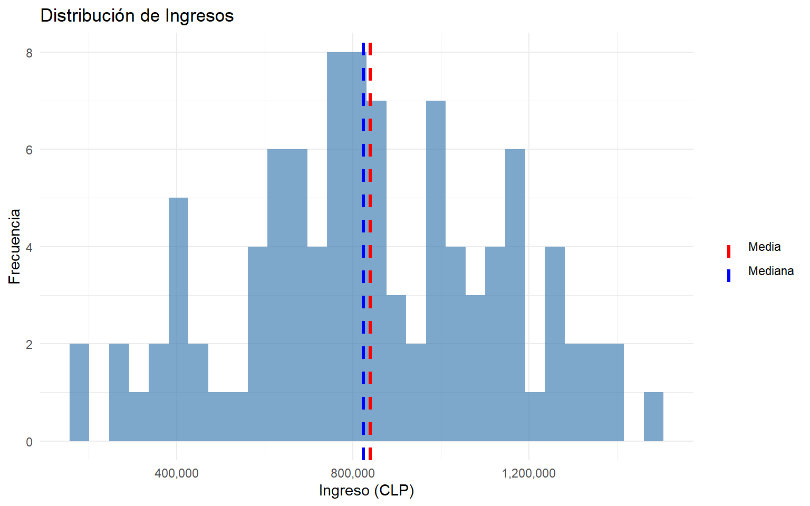
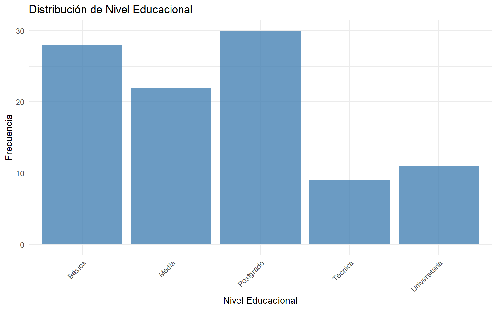
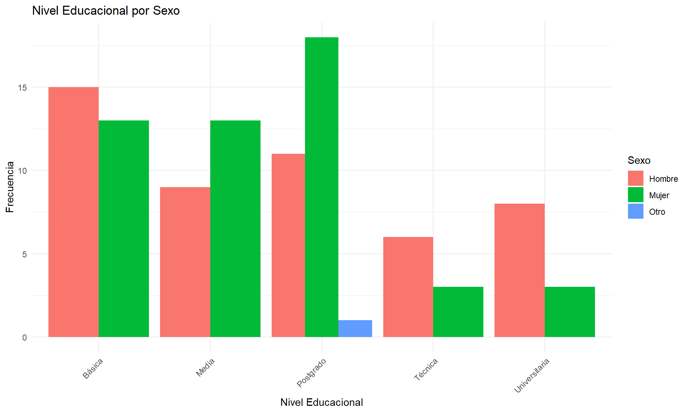

# Cargar librerías necesarias
library(tidyverse) # Para manipulación de datos
library(psych) # Para estadística descriptiva
# Configuración
options(scipen = 999) # Evitar notación científicaSesión 1: Introducción a R y Estadística Descriptiva (I)
Taller de Métodos y Técnicas de Investigación I
Objetivos de la sesión
Al finalizar esta sesión serás capaz de:
- Navegar en la interfaz de RStudio
- Crear y manipular objetos básicos en R (vectores, dataframes)
- Importar datos desde archivos CSV
- Calcular medidas de tendencia central
- Crear tablas de frecuencia simples y de contingencia
1. Introducción a R y RStudio
¿Qué es R?
R es un lenguaje de programación especializado en análisis estadístico y visualización de datos. Es:
- Gratuito y de código abierto
- Potente para análisis estadísticos complejos
- Versátil con miles de paquetes disponibles
- Reproducible - tu análisis queda documentado en código
La interfaz de RStudio
RStudio tiene 4 paneles principales:
- Editor (arriba izquierda): Donde escribes tu código en scripts
- Consola (abajo izquierda): Donde se ejecuta el código y ves resultados
- Environment (arriba derecha): Muestra tus objetos/datos cargados
- Files/Plots/Help (abajo derecha): Archivos, gráficos, ayuda
Consejo
Siempre trabaja con scripts (archivos .R o .qmd) en lugar de escribir directo en la consola. Así tu trabajo queda guardado y es reproducible.
2. Conceptos básicos de R
Preparación
Operaciones básicas
R funciona como una calculadora avanzada:
# Operaciones aritméticas
5 + 3[1] 810 - 2[1] 84 * 6[1] 2420 / 4[1] 52^3 # Potencia[1] 8# R respeta el orden de operaciones
(5 + 3) * 2[1] 16Crear objetos
En R guardamos información en objetos usando <-:
# Crear un objeto numérico
edad <- 25
edad[1] 25# Crear un vector (secuencia de valores)
edades <- c(23, 25, 28, 30, 22, 27)
edades[1] 23 25 28 30 22 27# Operaciones con vectores
mean(edades) # Promedio[1] 25.83333length(edades) # Largo del vector[1] 6
Nota importante
Los nombres de objetos: - Pueden contener letras, números, . y _ - NO pueden empezar con números - R distingue entre mayúsculas y minúsculas (edad ≠ Edad)
Tipos de datos
# Numérico
numero <- 42
class(numero)[1] "numeric"# Carácter (texto)
nombre <- "María"
class(nombre)[1] "character"# Lógico
es_estudiante <- TRUE
class(es_estudiante)[1] "logical"# Factor (categorías)
nivel_educacion <- factor(c("Básica", "Media", "Superior", "Media"))
nivel_educacion[1] Básica Media Superior Media
Levels: Básica Media Superior3. Trabajar con DataFrames
Los dataframes son tablas de datos, similares a hojas de Excel. Cada columna es una variable, cada fila es una observación.
Crear un dataframe
# Crear un dataframe desde vectores
estudiantes <- data.frame(
nombre = c("Ana", "Bruno", "Carla", "Diego", "Elena"),
edad = c(23, 25, 24, 26, 23),
carrera = c("Sociología", "Sociología", "Antropología",
"Sociología", "Antropología"),
nota = c(6.5, 5.8, 6.9, 6.2, 7.0)
)
# Ver el dataframe
estudiantes nombre edad carrera nota
1 Ana 23 Sociología 6.5
2 Bruno 25 Sociología 5.8
3 Carla 24 Antropología 6.9
4 Diego 26 Sociología 6.2
5 Elena 23 Antropología 7.0Explorar datos
# Estructura del dataframe
str(estudiantes)'data.frame': 5 obs. of 4 variables:
$ nombre : chr "Ana" "Bruno" "Carla" "Diego" ...
$ edad : num 23 25 24 26 23
$ carrera: chr "Sociología" "Sociología" "Antropología" "Sociología" ...
$ nota : num 6.5 5.8 6.9 6.2 7# Primeras filas
head(estudiantes, 3) nombre edad carrera nota
1 Ana 23 Sociología 6.5
2 Bruno 25 Sociología 5.8
3 Carla 24 Antropología 6.9# Dimensiones (filas x columnas)
dim(estudiantes)[1] 5 4# Resumen estadístico
summary(estudiantes) nombre edad carrera nota
Length:5 Min. :23.0 Length:5 Min. :5.80
Class :character 1st Qu.:23.0 Class :character 1st Qu.:6.20
Mode :character Median :24.0 Mode :character Median :6.50
Mean :24.2 Mean :6.48
3rd Qu.:25.0 3rd Qu.:6.90
Max. :26.0 Max. :7.00 Acceder a variables
# Acceder a una columna específica con $
estudiantes$edad[1] 23 25 24 26 23# Otra forma: usando corchetes
estudiantes[, "edad"][1] 23 25 24 26 23# Calcular estadísticos de una variable
mean(estudiantes$nota)[1] 6.48sd(estudiantes$nota)[1] 0.49699094. Importar datos
En la práctica, casi siempre importaremos datos desde archivos externos.
Importar CSV
# Importar archivo CSV
datos <- read.csv("../data/ejemplo.csv")
# Con tidyverse (recomendado)
datos <- read_csv("../data/ejemplo.csv")
# Ver primeras filas
head(datos)
Tip: Rutas relativas
Usa rutas relativas desde tu archivo .qmd: - ../data/archivo.csv (sube una carpeta, entra a data) - Nunca uses C:/Mi Computador/... (no funcionará en otros computadores)
Para esta sesión: datos simulados
Crearemos datos de ejemplo sobre una encuesta de satisfacción:
# Simular datos de encuesta
set.seed(123) # Para reproducibilidad
encuesta <- data.frame(
id = 1:100,
edad = sample(18:65, 100, replace = TRUE),
sexo = sample(c("Mujer", "Hombre", "Otro"), 100,
replace = TRUE, prob = c(0.5, 0.48, 0.02)),
educacion = sample(c("Básica", "Media", "Técnica", "Universitaria", "Postgrado"),
100, replace = TRUE),
satisfaccion = sample(1:7, 100, replace = TRUE),
ingreso = rnorm(100, mean = 800000, sd = 300000)
)
# Vista previa
head(encuesta, 10) id edad sexo educacion satisfaccion ingreso
1 1 48 Hombre Técnica 2 649340.4
2 2 32 Hombre Postgrado 2 1248818.2
3 3 31 Hombre Básica 5 458808.9
4 4 20 Hombre Universitaria 7 746284.5
5 5 59 Hombre Media 4 1370708.5
6 6 60 Hombre Universitaria 1 769707.5
7 7 54 Hombre Postgrado 5 392047.8
8 8 31 Hombre Postgrado 2 600569.2
9 9 42 Hombre Postgrado 5 945638.0
10 10 43 Hombre Postgrado 6 687319.15. Estadística Descriptiva (I)
La estadística descriptiva resume y organiza datos. Comenzaremos con medidas de tendencia central.
Medidas de tendencia central
Son valores que representan el “centro” de los datos:
Definiciones
- Media (promedio): Suma de valores / cantidad de valores
- Mediana: Valor que divide los datos en dos mitades iguales
- Moda: Valor más frecuente
# Media
mean(encuesta$edad)[1] 41.72# Mediana
median(encuesta$edad)[1] 42.5# Para variables categóricas: tabla de frecuencias
table(encuesta$educacion)
Básica Media Postgrado Técnica Universitaria
28 22 30 9 11 # Moda (el valor más frecuente)
# R no tiene función directa, usamos table
tabla_educacion <- table(encuesta$educacion)
names(tabla_educacion)[which.max(tabla_educacion)][1] "Postgrado"Comparación media vs mediana
# Crear histograma con media y mediana
ggplot(encuesta, aes(x = ingreso)) +
geom_histogram(bins = 30, fill = "steelblue", alpha = 0.7) +
geom_vline(aes(xintercept = mean(ingreso), color = "Media"),
linewidth = 1.2, linetype = "dashed") +
geom_vline(aes(xintercept = median(ingreso), color = "Mediana"),
linewidth = 1.2, linetype = "dashed") +
scale_color_manual(name = "",
values = c("Media" = "red", "Mediana" = "blue")) +
theme_minimal() +
labs(title = "Distribución de Ingresos",
x = "Ingreso (CLP)",
y = "Frecuencia") +
scale_x_continuous(labels = scales::comma)

Interpretación: La media es sensible a valores extremos, mientras que la mediana es más robusta.
6. Tablas de frecuencia
Las tablas de frecuencia organizan datos categóricos contando cuántas veces aparece cada valor.
Tabla de frecuencia simple
# Frecuencias absolutas
table(encuesta$sexo)
Hombre Mujer Otro
49 50 1 # Frecuencias relativas (proporciones)
prop.table(table(encuesta$sexo))
Hombre Mujer Otro
0.49 0.50 0.01 # Frecuencias relativas en porcentaje
prop.table(table(encuesta$sexo)) * 100
Hombre Mujer Otro
49 50 1 Tabla más elaborada
# Crear tabla con frecuencias y porcentajes
tabla_sexo <- as.data.frame(table(encuesta$sexo))
colnames(tabla_sexo) <- c("Sexo", "Frecuencia")
tabla_sexo$Porcentaje <- round(prop.table(tabla_sexo$Frecuencia) * 100, 1)
# Mostrar con kable
library(knitr)
kable(tabla_sexo, caption = "Distribución por sexo")| Sexo | Frecuencia | Porcentaje |
|---|---|---|
| Hombre | 49 | 49 |
| Mujer | 50 | 50 |
| Otro | 1 | 1 |
Tabla de contingencia (dos variables)
Las tablas de contingencia cruzan dos variables categóricas:
# Tabla de contingencia: sexo x educación
tabla_cruzada <- table(encuesta$sexo, encuesta$educacion)
tabla_cruzada
Básica Media Postgrado Técnica Universitaria
Hombre 15 9 11 6 8
Mujer 13 13 18 3 3
Otro 0 0 1 0 0# Agregar totales marginales
addmargins(tabla_cruzada)
Básica Media Postgrado Técnica Universitaria Sum
Hombre 15 9 11 6 8 49
Mujer 13 13 18 3 3 50
Otro 0 0 1 0 0 1
Sum 28 22 30 9 11 100Proporciones por fila o columna
# Proporciones por fila (cada fila suma 100%)
prop.table(tabla_cruzada, margin = 1) * 100
Básica Media Postgrado Técnica Universitaria
Hombre 30.61224 18.36735 22.44898 12.24490 16.32653
Mujer 26.00000 26.00000 36.00000 6.00000 6.00000
Otro 0.00000 0.00000 100.00000 0.00000 0.00000# Proporciones por columna (cada columna suma 100%)
prop.table(tabla_cruzada, margin = 2) * 100
Básica Media Postgrado Técnica Universitaria
Hombre 53.571429 40.909091 36.666667 66.666667 72.727273
Mujer 46.428571 59.090909 60.000000 33.333333 27.272727
Otro 0.000000 0.000000 3.333333 0.000000 0.0000007. Visualización de frecuencias
Gráfico de barras
ggplot(encuesta, aes(x = educacion)) +
geom_bar(fill = "steelblue", alpha = 0.8) +
theme_minimal() +
labs(title = "Distribución de Nivel Educacional",
x = "Nivel Educacional",
y = "Frecuencia") +
theme(axis.text.x = element_text(angle = 45, hjust = 1))

Gráfico de barras agrupadas
ggplot(encuesta, aes(x = educacion, fill = sexo)) +
geom_bar(position = "dodge") +
theme_minimal() +
labs(title = "Nivel Educacional por Sexo",
x = "Nivel Educacional",
y = "Frecuencia",
fill = "Sexo") +
theme(axis.text.x = element_text(angle = 45, hjust = 1))

8. Ejercicios prácticos
Ejercicio 1: Calcular estadísticos
Usando los datos de encuesta:
- Calcula la edad promedio
- Calcula la edad mediana
- ¿Cuál es la satisfacción promedio?
- ¿Cuál es el ingreso mediano?
Pista: Usa las funciones mean() y median()
Code
# Tu código aquí
Solución Ejercicio 1
# a) Edad promedio
mean(encuesta$edad)[1] 41.72# b) Edad mediana
median(encuesta$edad)[1] 42.5# c) Satisfacción promedio
mean(encuesta$satisfaccion)[1] 3.96# d) Ingreso mediano
median(encuesta$ingreso)[1] 824563.8
Ejercicio 2: Tablas de frecuencia
Crea una tabla de frecuencias para la variable educacion que incluya: - Frecuencia absoluta - Frecuencia relativa (porcentaje)
Pista: Usa table() y prop.table()
Code
# Tu código aquí
Solución Ejercicio 2
# Crear tabla
tabla_educ <- as.data.frame(table(encuesta$educacion))
colnames(tabla_educ) <- c("Nivel", "Frecuencia")
tabla_educ$Porcentaje <- round(prop.table(tabla_educ$Frecuencia) * 100, 1)
# Mostrar
kable(tabla_educ)| Nivel | Frecuencia | Porcentaje |
|---|---|---|
| Básica | 28 | 28 |
| Media | 22 | 22 |
| Postgrado | 30 | 30 |
| Técnica | 9 | 9 |
| Universitaria | 11 | 11 |
Ejercicio 3: Tabla de contingencia
Crea una tabla de contingencia entre sexo y educacion. Luego calcula las proporciones por fila.
¿Qué porcentaje de mujeres tiene educación universitaria?
Code
# Tu código aquí
Solución Ejercicio 3
# Tabla de contingencia
tabla <- table(encuesta$sexo, encuesta$educacion)
tabla
Básica Media Postgrado Técnica Universitaria
Hombre 15 9 11 6 8
Mujer 13 13 18 3 3
Otro 0 0 1 0 0# Proporciones por fila
prop_fila <- prop.table(tabla, margin = 1) * 100
round(prop_fila, 1)
Básica Media Postgrado Técnica Universitaria
Hombre 30.6 18.4 22.4 12.2 16.3
Mujer 26.0 26.0 36.0 6.0 6.0
Otro 0.0 0.0 100.0 0.0 0.0# El porcentaje de mujeres con educación universitaria es:
prop_fila["Mujer", "Universitaria"][1] 6Resumen
En esta sesión aprendimos:
- ✅ Navegar en RStudio y crear scripts
- ✅ Crear y manipular objetos básicos (vectores, dataframes)
- ✅ Importar datos desde CSV
- ✅ Calcular medidas de tendencia central (media, mediana, moda)
- ✅ Crear tablas de frecuencia simples y de contingencia
- ✅ Visualizar datos con gráficos de barras
Recursos adicionales
Lecturas recomendadas
- Navarro, D. (2015). Learning Statistics with R. Capítulos 3-5. Disponible online
- Wickham, H., & Grolemund, G. (2017). R for Data Science. Capítulos 1-4. Disponible online
Videos
Práctica adicional
- Swirl - Learn R, in R - Tutorial interactivo
- R for Data Science - Ejercicios
Para la próxima sesión
Tareas
- Completar los 3 ejercicios de esta sesión
- Instalar el paquete
psych:install.packages("psych") - Traer un dataset propio (opcional) o trabajaremos con datos de ejemplo
- Leer: Navarro, Capítulo 5 (Medidas de dispersión)
Recordatorio
La entrega de ejercicios es el [fecha]. Formato: archivo .qmd + HTML renderizado.